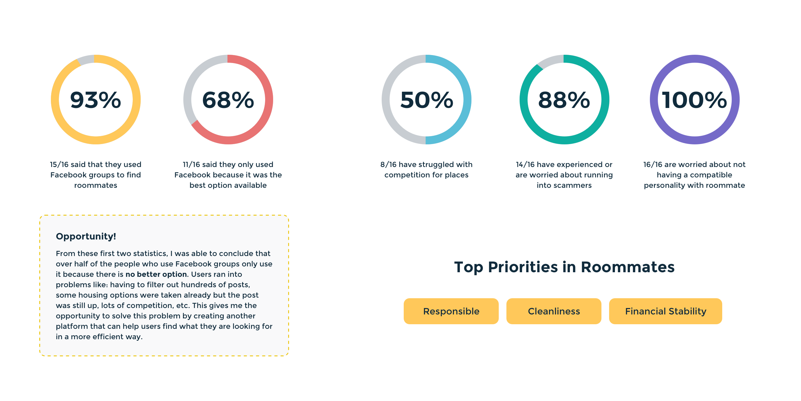
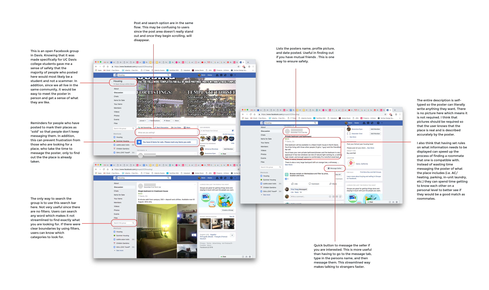
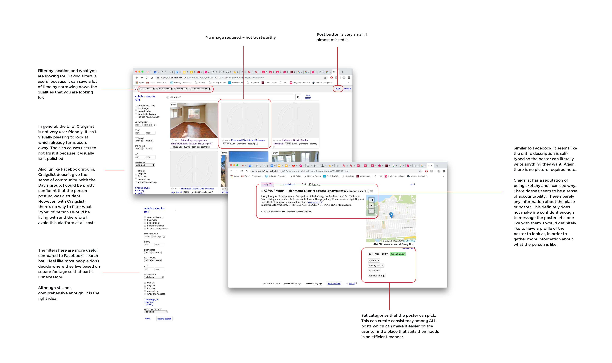
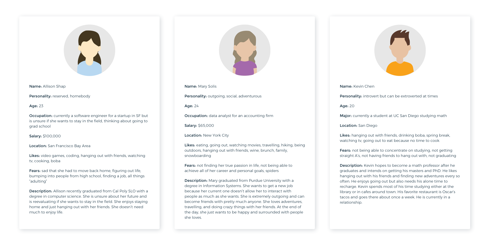
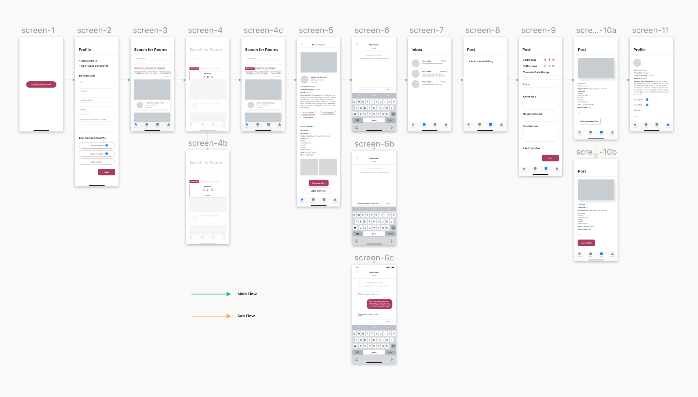
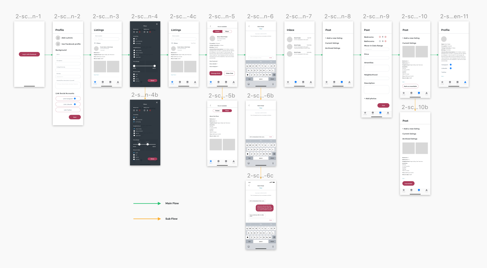
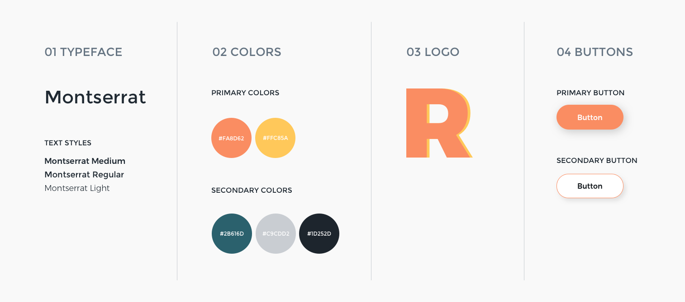

UX Design
Roomie
Roomie is an app designed to make finding a roommate easier and more efficient. Currently, finding a roommate is a tedious task that requires users to look through hundreds of posts. In addition, there is no comprehensive way to filter out those who would not be compatible living with you. Roomie solves this problem by creating a streamlined way of searching and posting.

My Role
- UX Designer
Timeline
- Oct. 2018 - Jan. 2019
Tools
- Sketch, InVision
Skills
- Wireframing, Rapid Prototyping, User Research
Introduction
Background
Around 54% of the world’s population live in cities which makes finding a good roommate harder as more people move into cities.
Problem
Finding roommates is a lengthy, stressful, and often frustrating experience. There is no one streamlined way, often resulting in having to talk to countless strangers while at the same time trying to filter out those who are scammers and/or have different lifestyle and living habits. The search is two-fold where you want to find people you like as well as an apartment that suits your needs.
How can we make the experience of finding and keeping a good roommate better (in terms of happiness) and more efficient?
Pain Points
The current platforms either do not provide safety assurance and/or make the search difficult and long by not providing the best UI. Not only do you have to find a person you would want to live with, but also find an apartment/place that suits your needs.
Research
Interview
I surveyed 16 people to get a better sense of what the user needs are.
- 1. What apps or platforms have you used in the past to find a roommate?
- 2. What was the experience like?
- 3. Can you tell me about a time when you ran into challenges and what the process was like?
- 4. Why did you choose that app/platform? If you’ve never had to find a roommate what would you use?
- 5. What qualities do you prioritize when looking for a roommate?
Key Findings
Proposed Solution
In an effort to prevent scammers, the app could have an ID scan similar to Airbnb's. Although not completely 100% scam proof, it can at least filter out those who have a record.
In addition, it could have a built in Facetime option which could help solve for roommate compatibility. This could give people a chance to talk to a potential roommate face to face and also give a video walking tour of the place. This could be an alternative option if someone is uncomfortable with giving away their phone number.
An important aspect to solving the problem with scammers and roommate compatibility would be the use of Facebook log in. The app would automatically link friends and mutual friends. This would be a convenient option and doesn't add a huge amount of time to the sign up flow.
To solve for efficiency in finding a roommate, the app could use filters in order to speed up the search process. Facebook housing groups do not have that option right now which slows down the process tremendously since users need to sift through hundreds of posts everyday. Examples of filters could be to filter by number of rooms, amenities, location, move in date, etc.
Competitive Analysis
For my competitive analysis, I decided to analyze the two most common ways of finding roommates: Facebook housing groups and Craigslist. Both of these platforms have their advantages and disadvantages.
One of the main pain points of Facebook housing groups is that hundreds of posts are added everyday. This makes it difficult to filter out exactly what you need in an apartment and roommate. There is no way to filter by location nor by roommate lifestyle. However, you can see mutual friends and their profile which is advantageous when looking for someone you would be compatible living with.
My other analysis was of Craigslist which has a reputation of being untrustworthy. There is no assured safety because there is no way to see if the person is real. Contact information and images aren't required. In addition, the interface is not user friendly nor visually pleasing adding another layer of untrustworthiness to the platform. However, it does use filters which is something that Facebook housing groups don't have.
Ideation
User Personas
User personas are important in figuring out who the target audience is. I decided that my two main audiences are current college students and new grads. I figured that these two groups of people would most likely be the ones looking for roommates. Those who are older and in serious relationships would probably not want any roommates and of course those with families would not want roommates either.
Iterations
Prototype 1
From my wireframes, I began creating my prototypes. After doing some initial user testing, I noticed some problems that needed to be addressed.
On the cards with the listing information, I needed to put more information about the place itself including the price and number of bedrooms/bathrooms. This design doesn’t have enough information for the user to make a decision on whether or not they want to click on a post. They would have to click through every single card just to see if the place was in their price range.
Prototype 2
Users responded well to the changes. They liked that the filter popped out from the side. Some suggestions included that since the number one priority would be finding a roommate not the actual apartment, to include "personality" filters. For example, by age or interests.
Another comment was made to make the profile form more interactive instead of just a straight form. This led me to think that I could make an interactive, fun quiz instead.
In addition, I wanted to explore the use of color more in-depth. I wanted the app to convey friendliness, safety, trustworthiness, and fun. According to researchers, orange promotes a sense of well-being that could be shared with compassion and warmth. A peach color conveys a more friendly and soothing feeling (source: Bourne Creative). Using those meanings, I decided to go with coral as my main color in my final prototype since it represented the qualities I wanted the brand to have.
Final Design
Brief Style Guide
One of the key decisions when making the style guide was color. I wanted the app to convey friendliness, warmth, and trustworthiness. These traits are often what people look for when building new friendships.
Final Prototype
My final prototype includes 5 different subflows: sign-in, search, message, post, and profile. The sign-in flow includes three different sections (background, lifestyle, interests) where the user answers questions about themselves. They can then link their social accounts if they want to.
Then the user is taken to the default listings screen where they can type in their location in which the app would then show listings available in that area. The filtering system is more comprehensive so the user can filter by apartment need as well as roommate personality. Once the user finds a listing they like, they can click on it, and find out more information about the roomie and the place.
If the user wants to contact the roomie, they can then click the message button which will take them to the messages screen. From there, they can go to their inbox or go back to the listings and search for other places.
The navigation tabs at the bottom of the screen will take the user wherever they need.
Takeaways
Finding a roommate is a long process because the stakes are high — you will be living with this person for at least a year which is why it is important to go through a thorough search. After conducting the interviews, I realized that pretty much all the problems and needs were what I personally would need in the app. I realized that this struggle was experienced by pretty much all of my friends when we went to different colleges. And even today, when many of my friends are moving to different cities, they still are in need of an app that streamlines the search process.
Next Steps
If I had more time, there are a lot of ideas I would like to see implemented in Roomie. First would be to add an ID scanner during the profile phase in order to filter out people who have a record. In addition, minor details like a time stamp for messages, a save for later option when posting, loading screens, or maybe even a "Save a listing" page when searching. I would also like to create a desktop app version of this in order to make it more accessible. And of course, continue the user testing process in order to get more feedback and iterate on better designs to further solve the users needs.